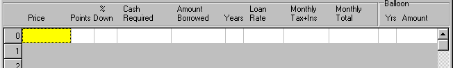

Let's take a look at the Mortgage Grid:

- Price - The total purchase price.
- Points - Points are a one-time bank charge at the time a loan is taken out. 1.0 points means one percent of the amount borrowed is paid the the bank at settlement.
- %Down - The percentage of the purchase price that will be paid by the buyer at the settlement. This column and the following two are grouped together by Per%Sense, and one (not more) of the three should be filled in for each computation line.
- Cash Required - The sum of the down payment and the value of the points charged. This is generally the bulk of the money needed at closing, although there are usually other smaller charges as well (e.q. title insurance).
- Amount Financed - The amount of the loan, equal to the purchase price less the down payment.
- Years - The duration of the mortgage, e.g. 15, 20, or 30 years.
- Loan Rate- The quoted interest rate charged by the bank or mortgage company. (This is equal to the APR only in situations where Points=0).
- Monthly Tax+Ins - The total dollar amount of your real estate taxes and homeowner;s insurance (annual amount divided by 12). Most banks require a homeowner's insurance policy before writing a mortgage. To assure that you continue to make your payments, the premiums are sometimes included in your monthly bill, along with real estate taxes, which the bank passes on to the city or town.
- Monthly Total - The total amount of your monthly mortgage payment, including taxes and insurance from the previous column.
- Balloon - A one-time payment applied to principal. Some mortgages are structured with lower monthly payments and a balloon payment that makes up the difference. The balloon payment often terminates the loan, but in Per%Sense may be at any time. These two columns (Yrs and Amount) are optional: if a number of years is specified, Per%Sense can compute a balloon amount for you. If a date and an amount are specified, Per%Sense will adjust your monthly payment computation according to your entry. If the date and amount are both blank, no balloon payment will be computed.
Fill in Price or Monthly Total - whichever is blank is computed
for you. Fill in % Down or Cash Required or Amount financed but not more than one of these. Other cells on the left side must all be filled by you.
The Balloon Payment area at right is optional. If you fill it in, the monthly payment computation will be adjusted accordingly. You may also fill in just the number of years, and the balloon Amount will be computed as output, provided that you have specified both Price and monthly payment.